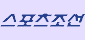

TV/연예뉴스

오마이걸 미미 "수입? 8년간 마이너스, 이제야 번다"…초고가 팔찌 인증
27일 '노빠꾸 탁재훈' 채널에는 미미가 출연했다.
미미는 "걸그룹 브랜드 평판 12위에 올랐다. 옛날에는
100위권에도 안 들었다"면서 달라진 위상에 뿌듯해했다.
오마이걸 팀 내에서는 1위라고. 또 오마이걸 컴백 소식을
전하며 "오마이걸도 변화가 필요하다. 30대가 한 명 있고 20대
후반이 천지다.
언제까지 청순과 요정 콘셉트를 할
건가"라며 목소리를 내기도 했다.
자신의 운영하는 유튜브 채널에 대해서도 밝혔다.
r구독자가 무려 45만 명이라고. 미미는 직접 편집을 하고
있다면서 "수입은 혼자 서 다 먹고 있다. 회사 도움을 일체 받고
있지 않다.
이젠 규모가 커져서 크루로 팀을
만들었다"라고 전했다
탁재훈이 "수입을 그렇게 혼자 다 먹으면 멤버들에게 미안하지
않냐"라고 묻자, "멤버들은 돈 많이 벌었다. 저보다 일찍
벌었다. 저는 8년 만에 버는 거다.
8년 동안 마이너스였다가 이제야 버는데 애들은 잠깐 1년, 2년
못 버는거다"라고 강조했다.
미미는 "다 똑같이 활동하지 않았다. 다들 수입을 쉽게 공개 안
하더라"라고 말했다.
또 탁재훈이 "그럼 제일 거지같이 살고 있는 멤버는 누구냐"고
물으니 자신을 가리켜 웃음을 안겼다.
탁재훈은 미미가 걸친 명품 C사 팔찌를 보더니 "돈 많이
버셨네"라고 놀라워했고 미미는 "돈은 이런데만 쓴다"라며
뿌듯해했다.
미미는 "부동산을 가지려고 노력 중이다. 건물을 사서 제가
거기에 거주하고 싶다"는 꿈도 밝혔다.
이게은(joyjoy90@sportschosun.com)